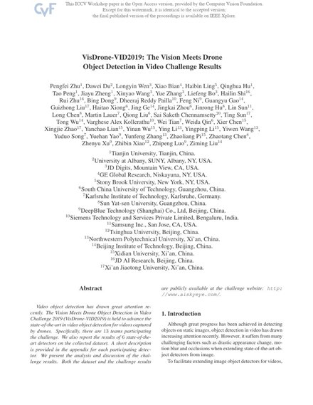
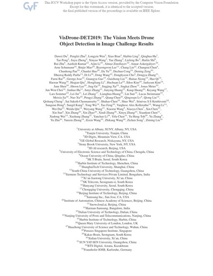

ICCV 2019 VisDrone Challenge

About the Challenge
The VisDrone challenge asks participants to detect and track objects such as pedestrians, cars, buses and bicycles in imagery captured by drone platforms. Compared with ground-level benchmarks, objects occupy very few pixels, appear in dense clusters, and undergo large scale variation as the drone changes altitude — making it a demanding testbed for small object detection.
Our entry built on the small-object detection work developed in the same period, IPG-Net and HRDNet, which target exactly the information imbalance and resolution trade-offs that dominate this benchmark.
The reports below are the joint challenge summaries published by the organisers together with all participating teams.
Challenge Reports

Pengfei Zhu, Dawei Du, …, Ziming Liu.
VisDrone-VID2019: The Vision Meets Drone Object Detection in Video Challenge Results.
ICCV 2019 Workshops.
BibTeX
@inproceedings{dronevid,
title = {VisDrone-VID2019: The Vision Meets Drone Object Detection in Video Challenge Results},
author = {Zhu, Pengfei and Du, Dawei and Wen, Longyin and Bian, Xiao and Ling, Haibin and Hu, Qinghua and others},
booktitle = {IEEE/CVF International Conference on Computer Vision (ICCV) Workshops},
month = oct,
year = {2019},
organization = {IEEE}
}
Dawei Du, Pengfei Zhu, …, Ziming Liu.
VisDrone-DET2019: The Vision Meets Drone Object Detection in Image Challenge Results.
ICCV 2019 Workshops.
BibTeX
@inproceedings{dronedet,
title = {VisDrone-DET2019: The Vision Meets Drone Object Detection in Image Challenge Results},
author = {Du, Dawei and Zhu, Pengfei and Wen, Longyin and Bian, Xiao and Ling, Haibin and Hu, Qinghua and others},
booktitle = {IEEE/CVF International Conference on Computer Vision (ICCV) Workshops},
month = oct,
year = {2019},
organization = {IEEE}
}